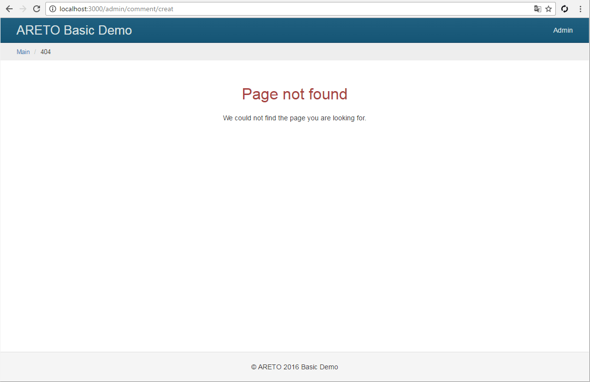
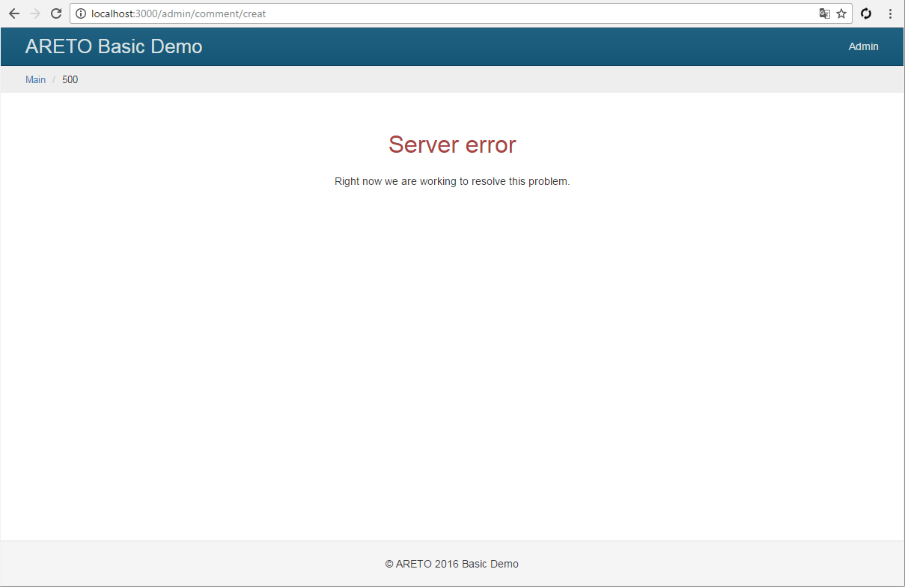

Обработка ошибок
Наберите в браузере адрес http://localhost:3000/bla-bla-bla
или замените в this.render('index')
на несуществующий шаблон this.render('bla-bla-bla').
В каждом случае вы увидите, как сервер реагирует на ошибки.
Подключение перехвата
Чтобы перехватывать и обрабатывать подобные ситуации, добавьте в конфигурацию секцию router,
в которой укажите контроллер (по умолчанию DefaultController)
и действие (по умолчанию error), отвечающие за обработку ошибок.
config/default.js
Действие над ошибкой
В контроллере определите метод actionError, который будет вызываться для обработки ошибки.
controllers/DefaultController.js
Представление ошибок
Для статусов ошибок 403, 404, 500 создайте шаблоны, которые будут отображаться пользователю.
views/default/403.ejs
views/default/404.ejs
views/default/500.ejs
Теперь повторите ошибки из начала главы и увидите, как изменился ответ сервера.